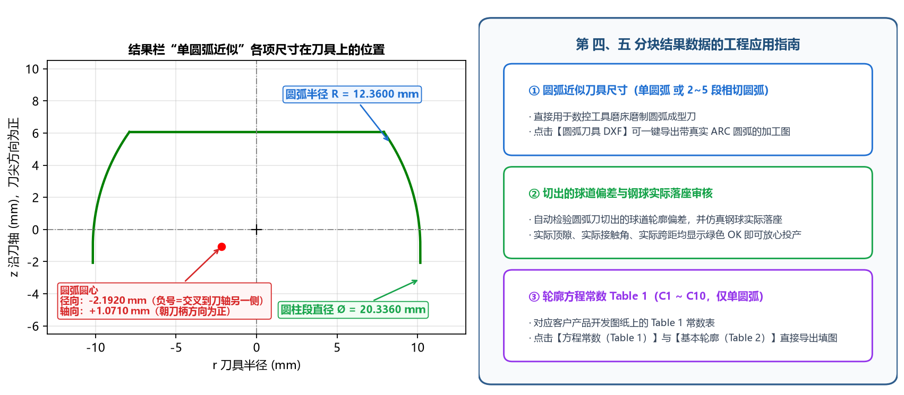

4.2 圆弧近似刀具与轮廓方程常数 (Table 1)
本节逐行解读计算结果面板下半部分的两大分块：■ 四、圆弧近似刀具（含磨刀尺寸、刃口四分段与刀尖延伸、实际落座审核）与 ■ 五、轮廓方程常数 Table 1。
一、■ 四、圆弧近似刀具 的三种输出形态详解
根据您在【高级参数 → 圆弧近似】中所选的 圆弧段数（1 段 或 2~5 段）、单圆弧求法（拟合精确廓形 或 按审核优化）及 审核优化目标，第 四 分块会输出对应的磨刀尺寸、刃口分段范围与仿真落座审核结果：
形态 A：单圆弧 + 拟合精确廓形（默认，适用于椭圆与点表截面）
■ 四、圆弧近似刀具：单圆弧，拟合精确廓形（取整到 3 位，磨刀尺寸）
圆弧半径 R：12.3600
圆心 径向 / 轴向：-2.1920 / +1.0710（径向负=在刀轴另一侧，轴向朝刀柄为正）
圆柱直径（刀头最大直径）：Ø20.3360
刀尖直径：Ø16.9539（刀尖端面 z = 6.0680）
▸ 刃口分段（z 沿刀轴）
圆弧过渡（接圆柱）：-1.0710 ~ -0.1747（长 0.8963，不切削）
边缘延伸：-0.1747 ~ -0.0566（长 0.1181，球道边缘外的余量）
接触段（切削球道）：-0.0566 ~ 6.0680（长 6.1246）
刀尖端面（平切）：z = 6.0680，Ø16.9539
刀尖延伸：0.0000（未延伸；刀尖最多可沿原圆弧延伸到 z = 10.2229，即再延伸 4.1549 而不切深球道底）
▸ 该刀具切出的球道【实际值·仿真】
与设计截面偏差：3.78 μm 合格（轮廓度 ±10）
实际顶隙：0.0325 OK（图纸 0.019 ~ 0.04）
实际接触角：41.988° OK（图纸 40 ~ 44）
实际接触角跨距：13.2751（未给范围）
钢球中心移动：+3.8 μm（朝开口为正）
实际 PCD：62.4716 OK（偏差 +7.6 μm；图纸 62.454 ~ 62.474）

1. 核心磨刀尺寸
| 输出项 | 几何定义与正负号约定 |
|---|---|
圆弧半径 R |
单圆弧刀具刀尖侧圆弧段的圆弧半径 （单位 mm，已按 取整位数 取整）。 |
圆心 径向 / 轴向 |
斜杠 / 前后分别为圆弧圆心的径向位置与轴向位置（单位 mm）：• 斜杠前 -2.1920（径向）：圆心到刀轴的距离，负号 - 表示圆心越过刀轴交叉到了另一侧；• 斜杠后 +1.0710（轴向）：圆心相对于虚拟钢球中心沿刀轴的距离，朝刀柄方向为正。 |
圆柱直径（刀头最大直径） |
靠近刀柄侧、与圆弧水平相切衔接的圆柱段外径（单位 mm）。 |
刀尖直径 |
刀尖平端面（z = 6.0680）处的圆弧外径（单位 mm），方便磨刀后直接测量刀尖端面直径。 |
2. ▸ 刃口分段（z 沿刀轴） 与 刀尖延伸（新增！）
软件将整条圆弧刃口从刀柄侧（圆柱相切处）到刀尖端面，按实际功能精确划分为 4 个轴向区段（与 Tab 6 左半刃口及 arc_tool.dxf 视图 ② 的四色分段一一对应）：
圆弧过渡（接圆柱）：从圆弧与圆柱相切处（）到边缘延伸起点，处于外球面之外，不参与切削；边缘延伸：球道开口边缘（外球面）之外预留的延伸余量段；接触段（切削球道）：真正包络切出球道（从外球面边缘一直到球道底切点 ）的核心刃口段；刀尖延伸：当【圆弧近似】中设置了刀尖延伸 > 0时，显示从切出球道底处 沿同一圆弧继续向刀尖延伸的区段（不切削球道底，用于避开尖角磨损）；同时自动给出刀尖最多可沿原圆弧延伸到 z = ...的几何极限供参考。
3. ▸ 该刀具切出的球道【实际值·仿真】
与设计截面偏差：取整后的圆弧刀具实际包络切出的球道与设计截面的最大法向偏差（单位μm），对照±轮廓度公差/2判定合格或超差!；实际顶隙 / 实际接触角 / 实际接触角跨距 / 钢球中心移动 / 实际 PCD：把钢球放进圆弧刀切出的球道中（实际落座）测得的全部装配指标，逐项对照图纸公差校验OK或超出范围!。
形态 B：单圆弧 + 按审核优化（支持 3 种 审核优化目标）
当对双圆弧（尖底）球道（如内置示例 AC10000）选用单圆弧 按审核优化 时，输出如下：
■ 四、圆弧近似刀具：单圆弧，按审核优化（贴合设计截面）（取整到 3 位，磨刀尺寸）
圆弧半径 R：10.5060
圆心 径向 / 轴向：-0.5580 / -0.0250（径向负=在刀轴另一侧，轴向朝刀柄为正）
圆柱直径（刀头最大直径）：Ø19.8960
刀尖直径：Ø11.8364（刀尖端面 z = 8.4648）
▸ 刃口分段（z 沿刀轴）
边缘延伸：0.0250 ~ 0.1414（长 0.1164，球道边缘外的余量）
接触段（切削球道）：0.1414 ~ 8.4648（长 8.3234）
刀尖端面（平切）：z = 8.4648，Ø11.8364
刀尖延伸：0.0000（未延伸；刀尖最多可沿原圆弧延伸到 z = 9.8750，即再延伸 1.4102 而不切深球道底）
▸ 该刀具切出的球道【实际值·仿真】
侧面偏差（|y| ≥ 3.31）：3.00 μm 合格（轮廓度 ±50；球道底允许适应）
实际顶隙：0.0029 超出范围!（图纸 0.02 ~ 0.1）
实际接触角：42.263° OK（图纸 38.5 ~ 45.5）
实际接触角跨距：13.2846 OK（图纸 12.3 ~ 14）
钢球中心移动：-12.5 μm（朝开口为正）
实际 PCD：69.9746 超出范围!（偏差 -25.4 μm；图纸 69.99 ~ 70.01）
审核项未全部满足：当前按“贴合设计截面”优化（审核范围为软约束）。只按审核项验收时，可把“审核优化目标”改为“审核范围硬约束”或“审核范围中值”（侧面会偏离双圆弧设计截面）
侧面偏差（|y| ≥ 3.31）：只考核球道侧面工作区（接触点横向位置一半以外）与设计截面的法向偏差，球道底允许从尖底自然过渡为圆底；- 智能切换提示：当默认按
贴合设计截面优化导致顶隙或实际 PCD 等软约束未满足时，结果栏会直接给出切换建议——只需将【圆弧近似】中的审核优化目标改为审核范围硬约束或审核范围中值，即可让顶隙、接触角、跨距、实际 PCD 四项审核指标 100% 达标！
形态 C：多段相切圆弧（圆弧段数 = 2 ~ 5，适用于双圆弧尖底截面）
当针对双圆弧（尖底）球道将 圆弧段数 设为 3 时，输出如下：
■ 四、圆弧近似刀具：3 段相切圆弧（取整到 3 位，磨刀尺寸）
第 1 段（外凸）：R = 11.1210 圆心 -1.1210 / +0.0250 z: 0.097 ~ 4.819
第 2 段（外凸）：R = 18.9720 圆心 -7.9030 / +4.0340 z: 4.819 ~ 6.329
第 3 段（内凹）：R = 23.4820 圆心 +27.3260 / -16.2990 z: 6.329 ~ 9.875
圆柱直径 / 刀尖直径：Ø20.0000 / Ø11.5718（交界取整错位 0.42 μm（DXF 中已画成严格相切））
第 1~N 段（外凸 / 内凹）：从刀柄侧到刀尖侧依次列出每段相切圆弧的凹凸方向、半径R、圆心径向 / 轴向坐标及轴向范围z；交界取整错位：按 3 位小数取整后在交界点处的亚微米级径向差值；导出圆弧刀具 DXF时已自动绘制为严格相切连续（）的ARC圆弧链。
二、■ 五、轮廓方程常数 Table 1 结果解读
当 圆弧段数 = 1 时，第 五 分块直接输出客户图纸 Table 1 所需的 10 个常数（C1 ~ C10）与还原自检结果：
■ 五、轮廓方程常数 Table 1（拟合值）
C1：2.19160 C2：-25.50227
C3：-18.52849 C4：-19.59946
C5：1.07098 C6：-21.56794
C7：650.36593 C8：-6.06824
C9：1.07098 C10：152.76417
常数自检：0.00 μm OK（由常数还原的轮廓与基本轮廓的最大偏差（应 < 1 μm））
- 一键导出填图：点击左侧
方程常数（Table 1）导出table1_constants.csv，点击基本轮廓（Table 2）导出对应的 117 点坐标表table2_basic_profile.csv； - 多段圆弧说明：当
圆弧段数设为2 ~ 5段时，第 五 分块会提示只适用于单圆弧刀具（圆弧段数 = 1），多段圆弧不提供（仍可正常导出基本轮廓（Table 2）供三坐标检测使用）。